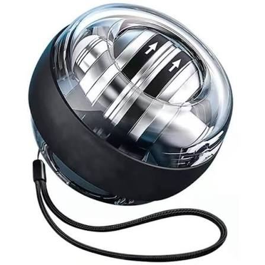

La Powerball pour avant-bras (aussi appelée gyroscope ou NSD Powerball) est un appareil d'exercice gyroscopique compact, de la taille d'une balle de tennis, conçu pour renforcer les muscles de la main, du poignet et de l'avant-bras. Elle fonctionne sans pile ni électricité, uniquement grâce à la force centrifuge.
| NOM | IMAGE | Prix |
| Power Ball |  | 20€ |